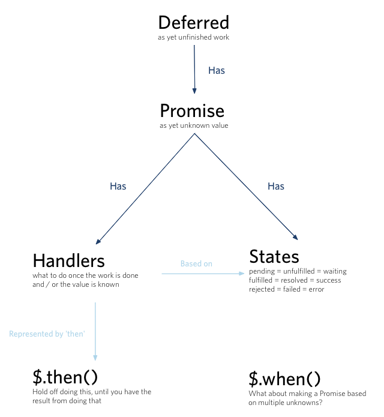
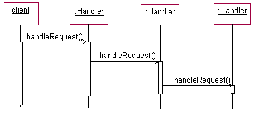
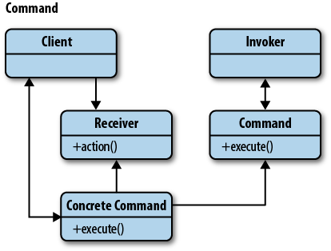
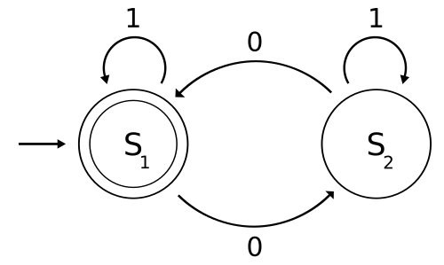
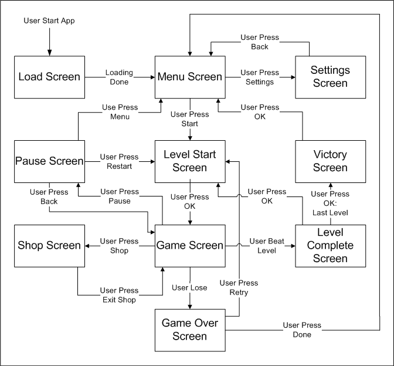
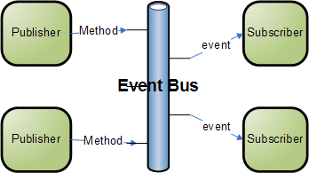
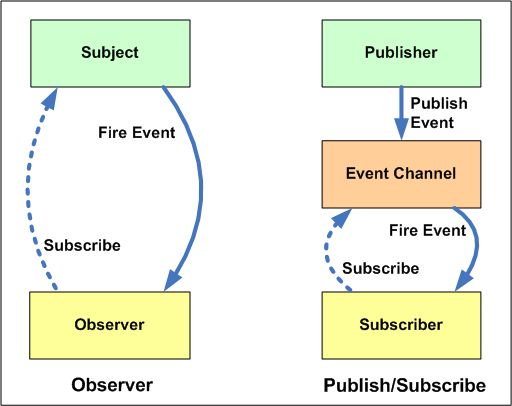
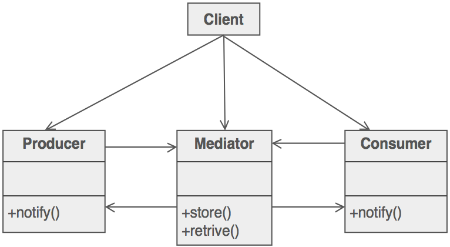
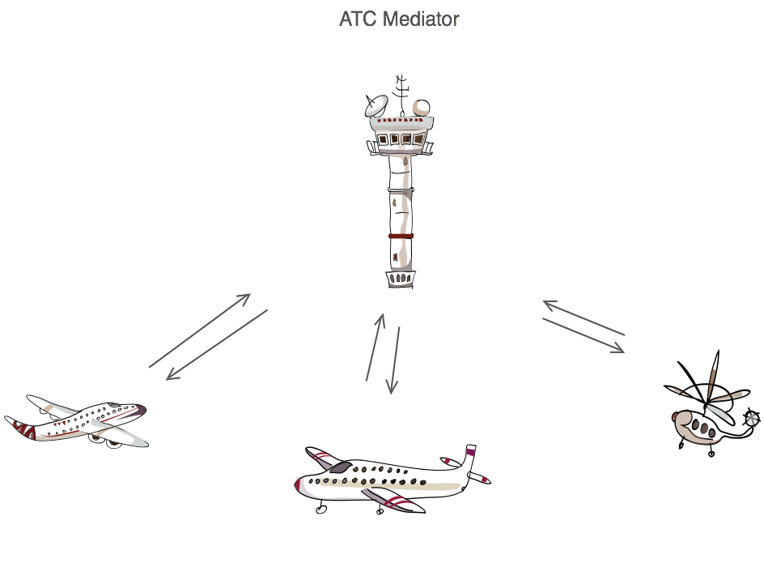

Promise / Deffered object
‘promises can mitigate the “Pyramid of Doom”: the situation where code marches to the right faster than it marches forward.’ ~Kristopher Michael Kowal
It might be very well that right now you are writing code like this:
step1(function (value1) {
step2(value1, function(value2) {
step3(value2, function(value3) {
step4(value3, function(value4) {
// Do something with value4
});
});
});
});Promises allow you to rewrite your code like so:
promisedStep1
.then(promisedStep2)
.then(promisedStep3)
.then(promisedStep4)
.then(function (value4) {
// Do something with value4
})
.catch(function (error) {
// Handle any error from all above steps
})
.done();In the code sample above promisedStep{N} is a version of step{N} which returns a promise.
Several specifications that define promises exist.
- Promises/A [http://wiki.commonjs.org/wiki/Promises/A]
- Promises/A+ [https://promisesaplus.com]
- Standard ECMA-262 6th Edition: Promise Objects [http://www.ecma-international.org/ecma-262/6.0/#sec-promise-objects]
Chain of responsibility
In object-oriented design, the chain-of-responsibility pattern is a design pattern consisting of a source of command objects and a series of processing objects. Each processing object contains logic that defines the types of command objects that it can handle; the rest are passed to the next processing object in the chain. A mechanism also exists for adding new processing objects to the end of this chain.
An example of a chain-of-responsibility is event-bubbling in which an event propagates through a series of nested controls one of which may choose to handle the event.
<!DOCTYPE HTML>
<html>
<body>
<link type="text/css" rel="stylesheet" href="example.css">
<div class="d1">1 <!-- the topmost -->
<div class="d2">2
<div class="d3">3 <!-- the innermost -->
</div>
</div>
</div>
</body>
</html>Benefits of the Chain of Responsibility Pattern
The chain of responsibility pattern allows you to dynamically choose which object handles a request. This means you can use conditions known only at run-time to assign tasks to the most appropriate object.
Command
The general idea behind the Command pattern is that it provides us a means to separate the responsibilities of issuing commands from anything executing commands, delegating this responsibility to different objects instead.
The Command pattern has four main parts that make it up.
- Command object
- Client
- Invoker
- Receiver
var CarManager = {
// request information
requestInfo: function( model, id ){
return "Info for " + model + " with ID " + id + " is f1";
},
// purchase the car
buyVehicle: function( model, id ){
return "You have purchased Item " + id + ", a " + model;
},
// arrange a viewing
arrangeViewing: function( model, id ){
return "Booked a view of " + model + " ( " + id + " ) ";
}
};
// We want to be able to do:
CarManager.execute( "buyVehicle", "Ford Escort", "453543" );
// We can achieve this with:
CarManager.execute = function ( name ) {
return CarManager[name] &&
CarManager[name].apply(
CarManager,
[].slice.call(arguments, 1)
);
};
Memento
The Memento Design Pattern allows you to save historical states of an object and restore the object back from the historical states. As your application is progressing, you may want to save checkpoints in your application and restore back to those checkpoints later.

- The Originator class is the objects that will be saved and restored later:
- The state variable contains information that represents the state of the Originator object. This is the variable that we save and restore.
- The CreateMemento method is used to save the state of the Originator. It creates a Memento object by saving the state variable into the Memento object and return it. This is for recording the state of the Originator.
- The SetMemento method restores the Originator by accepting a Memento object, unpackage it, and sets its state variable using the state variable from the Memento. This is for restoring the state of the Originator using the information that was previously saved in the Memento.
- The Memento class stores the historical information of the Originator. The information is stored in its state variable.
- The Caretaker class manages the list of Memento. This is the class for the client code to access.
State Machine
A finite state machine came out of a branch of computer science called automata theory whose family of data structures also includes the famous Turing machine. FSMs are the simplest member of that family.
Automata theory is the study of abstract machines and automata, as well as the computational problems that can be solved using them. It is a theory in theoretical computer science, under discrete mathematics (a section of Mathematics and also of Computer Science). Automata comes from the Greek word αὐτόματα meaning "self-acting".
The picture above is a visualization of an automaton that recognizes strings containing an even number of 0s.
Visualisation of a simple state machine

Iterator
The Iterator pattern allows clients to effectively loop over a collection of objects.

Pub/Sub
Publish–subscribe is a messaging pattern where senders of messages, called publishers, do not program the messages to be sent directly to specific receivers, called subscribers. Instead, published messages are characterized into classes, without knowledge of what, if any, subscribers there may be. Similarly, subscribers express interest in one or more classes, and only receive messages that are of interest, without knowledge of what, if any, publishers there are.
Observer
The observer pattern is a software design pattern in which an object, called the subject, maintains a list of its dependents, called observers, and notifies them automatically of any state changes, usually by calling one of their methods.

What's the difference between pub/sub and observer pattern?

Mediator
The Mediator defines an object that controls how a set of objects interact. Loose coupling between colleague objects is achieved by having colleagues communicate with the Mediator, rather than with each other.
Example application: Airport control tower
The control tower at a controlled airport demonstrates this pattern very well. The pilots of the planes approaching or departing the terminal area communicate with the tower rather than explicitly communicating with one another. The constraints on who can take off or land are enforced by the tower. It is important to note that the tower does not control the whole flight. It exists only to enforce constraints in the terminal area.
Callback
A callback is a piece of executable code that is passed as an argument to other code, which is expected to call back (execute) the argument at some convenient time. The invocation may be immediate as in a synchronous callback, or it might happen at later time as in an asynchronous callback. In all cases, the intention is to specify a function or subroutine as an entity that is, depending on the language, more or less similar to a variable.
function someAction(x, y, someCallback) {
return someCallback(x, y);
}
function calcProduct(x, y) {
return x * y;
}
function calcSum(x, y) {
return x + y;
}
// alerts 75, the product of 5 and 15
alert(someAction(5, 15, calcProduct));
// alerts 20, the sum of 5 and 15
alert(someAction(5, 15, calcSum));